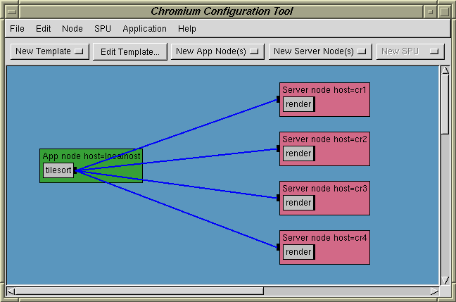
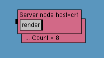
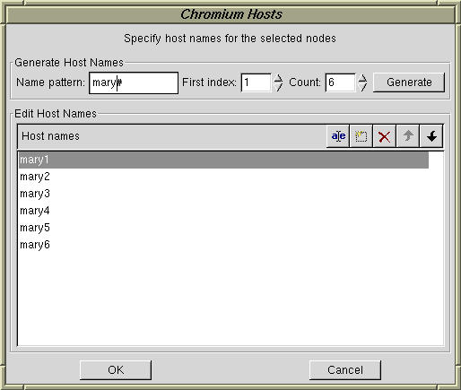
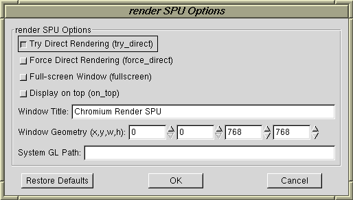
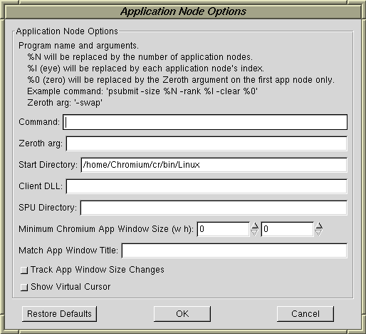
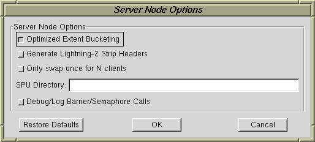

The Chromium graphical configuration tool (hereafter called the config tool) allows one to build a Chromium configuration with a GUI-based interface, instead of writing Python configuration files.
Here's a screenshot showing a simple tile-sort configuration:

The config tool is written in Python and uses the wxWindows GUI toolkit.
On a Linux system, you'll need the wxGTK and wxPython libraries.
If you're using Red Hat Linux the wxGTK-2.3.2-1 and
wxPython-2.3.2.1-1 RPMs are known to work.
On a Windows system, (finish this).
The config tool is in the cr/mothership/tools/ directory.
Run it by typing python configtool.py
You may optionally specify a Chromium configuration file to read
immediately.
For example: python configtool.py ../configs/crdemo.conf
Note to Unix users: If you set the executable flag on
configtool.py with chmod a+x configtool.py you'll be able
to run the program directly, without invoking python directly.
A Chromium configuration is usually a directed acyclic graph (DAG). The graph's nodes are displayed as boxes and the edges are drawn as lines. With the graphical configuration tool you can add, remove and edit nodes and edges with a graphical interface, instead of editing the text-based Python configuration file.
Typically, a new configuration will be created with a template. Alternately, a configuration can be built from scratch by creating nodes, adding SPUs to the nodes, connecting the nodes and setting various configuration options.
Application nodes are represented by green boxes and network/server nodes are represented by red boxes. Each node icon may contain an SPU chain, shown as a sequence of gray boxes. Nodes and SPUs are labeled accordingly.
Application and network/server nodes may be created with the New App Node(s) and New Server Node(s) buttons. You can create 1, 2, 3, 4 or N instances of either type of node.
Nodes may be selected and moved using the mouse. Selected nodes have a thick black outline. You may extend the selection by shift-clicking. You can toggle the selection status of a node by control-clicking.
The Node menu has commands that apply to the currently selected nodes. Most are self-explanatory, some are described in more detail below.
Compound nodes are a compact way to represent a set of many similar nodes. For example, if your configuration has 8 rendering nodes, you may represent them using a single compound node, rather than 8 individual nodes. A compound node looks like this:

The compound node displays a count which indicates how may nodes are represented by the icon. You can change the count with the Node / Node Count menu item. Compount nodes may be split into a set of individual, non-compound nodes with the Node / Split menu item. A set of similar, individual nodes may be combined into a compound node with the Node / Merge menu item.
Nodes have hostnames to indicate the computer on which they run. The hostname can be set for the selected nodes with the Node / Host Name menu item. The following dialog will appear:

There are two sections to the dialog:
When finished, choose OK or Cancel.
The Edit menu has Cut, Copy, and Paste commands. These are useful for moving parts of configuration graphs between two projects.
Nodes contain SPU chains. SPU chains are seen as one or more gray, labeled boxes inside node icons.
To add a new SPU to a node, first select the node, then choose the SPU type from the New SPU button. If no SPUs are currently selected in the node, the new SPU will be added to the end of the SPU chain. If one or more SPUs are currently selected in the node, the new SPU will be added in front of the selected SPU.
As with nodes, SPUs may be selected and deselected by clicking on them with the mouse. The shift and control keys may be used while clicking to extend and toggle selection status, respectively.
The SPU menu has commands that apply to the currently selected SPUs.
The SPU / Options menu item will open a dialog which allows you to configure the selected SPUs. If more than one SPU is selected, all selected SPUs must be of the same type. The new SPU settings will be applied to all selected SPUs.
Here are the options for the render SPU:

The Restore Defaults button will reset all options to their default values
Documentation for SPU options can be found in the section Configuration Options for provided SPUs.
Some SPUs (such as pack and tilesort) have a packer which allows them to be connected to downstream servers. Such SPUs have a black, rectangular socket on their right edge. Similarly, servers have a black, rectangular socket on their left edge. Connections between packing SPUs and servers are drawn as blue lines.
To connect nodes (i.e. connect a packing SPU to a server node) use the Node / Connect menu item. You must have at least two nodes selected, one must be a server and the other must have an SPU chain that ends with a packing SPU.
If more than two SPUs are selected, the configuration tool will do its best to determine the desired connection topology, but it may make mistakes.
Nodes may be disconnected by selecting the nodes and choosing the Node / Disconnect menu item.
Application nodes can be configured by selecting them and then choosing App Node Options from the Node menu. When you chose it, the following dialog appears:

The three fields labeled Command, Zeroth arg, and Start Directory control execution of the application program.
Command specifies the the default program and command line arguments to run with this configuration. There are three special substitutions that may be made:
These substitutions are useful for multi-client configurations. Suppose, for example, that you're using a sort-last configuration with 4 application/rendering nodes and want to run the psubmit demo program.
The command would be "psubmit -size %N -rank %I -clear %0"
and the zeroth argument would be "-swap".
As a result, the four instances of the application nodes would be run with the following command lines:
psubmit -size 4 -rank 0 -clear -swap
psubmit -size 4 -rank 1 -clear
psubmit -size 4 -rank 2 -clear
psubmit -size 4 -rank 3 -clear
The Start Directory parameter specifies the directory in which the crappfaker should be started. This will be the application's current working directory.
The Client DLL parameter specifies the directory to search to find the faker library.
The SPU Directory parameter specifies the directory to search when loading SPUs.
The Minimum Chromium App Window Size and Match App Window Title controls are useful for multi-context/window applications. They're described in the application node configuration section.
When the Track App Window Size Changes control is checked, Chromium will monitor the size of the original application window and tell down stream Chromium SPUs to adjust their window sizes whenever the application window is resized.
When the Show Virtual Cursor control is checked, Chromium will monitor the current mouse pointer position in the application window and draw a virtual cursor in the Chromium render SPU windows. This is useful for interactive application that have direct manipulation.
Server nodes can be configured by selecting them and then choosing Server Node Options from the Node menu. When you chose it, the following dialog appears:

The Optimized Extent Bucketing control is used when there are two or more images tiles present in the server node's rendering window. A special hash-based algorithm will be used to determine which tiles a primitive intersects. If option offers improved server performance, but all tiles must be the same size.
The Generate Lightning-2 Strip Headers option is for use with the Lightning-2 hardware image compositor. It controls whether special compositing codes are embedded in 2-pixel wide columns between tiles. (currently not implemented in the server)
The Only swap once for N clients option is useful for sort-last rendering, or when a server has several clients. When enabled, OpenGL SwapBuffer commands will only be executed for one of the N client nodes. If all clients were to do a SwapBuffers, the image would flicker.
The SPU Directory parameter specifies the directory to search when loading SPUs.
Choosing Options from the Mothership menu opens the mothership options dialog. There are only two controls.
The Max Transmission Unit controls the maximum buffer sized used for inter-node communication, in bytes. The default is 1MB.
The Automatically Start Servers option, when enabled, will cause the mothership to automatically spawn crserver and crappfaker processes for each node (currently limited to sh and rsh on Unix). This means you don't have to manually start these processes.
The Mothership menu has Run and Stop items. The Run item will spawn the Chromium mothership as a new process. The Stop item will kill the spawned mothership.
If the mothership option to automatically start crservers and crappfakers is enabled, your Chromium configuration and application should run automatically. Otherwise, you'll have to start the crserver and crappfaker processes yourself, as this option only directly spawns the mothership.
Templates allow one to quickly create common Chromium configurations without having to create individual nodes, SPUs and connections. To instantiate a template, choose the desired template from the New Template button.
When you instantiate a template you'll often be prompted for a few parameters such as number of application nodes, mural rows and columns, etc. The configuration will be generated when you click on the OK button.
Templates may be edited with special, easy-to-use dialogs. Click on the Edit Template button to open the editor, if supported.
Currently, there are three templates:
The Chromium configuration tool may be extended with new types of templates (it's a modular interface). A template for binary-swap image composition is likely.
The config tool looks for a special hardware description file when a template is created. This file contains cluster host names, the mural size, screen sizes, etc. If you set up this file, it'll save you some time when designing a new Chromium configuration.
Here's a sample of the file:
{
"mural_size" : (2, 2), # (cols, rows)
"screen_size" : (1280, 1024), # in pixels
"tile_size" : (256, 256), # for lightning-2 (in pixels)
"frontend_hosts" : ["localhost"],
"cluster_hosts" : ["cr1", "cr2", "cr3", "cr4"],
"cluster_pattern" : ("cr#", 1)
}
The file format can be directly parsed by Python (it's a dictionary which maps configuration option names to values.)
In this case, we set the following parameters:
mural_size - this defines the size of your mural display
in terms of columns and rows of screens. In this case, there are two
rows of two screens.
screen_size - this indicates that each screen of each
rendering host is 1280 x 1024 pixels in size.
tile_size - for a tile-reassembly configuration (such
as used with Lightning-2) this indicates the default tile size in pixels.
frontend_hosts - this list contains the host names of the
client workstations. Usually, there's only one name in this list.
In a typical tile-sort configuration, this will be the application host.
In a sort-last configuration, this would be the host that displays the
composited image.
cluster_hosts - this list contains the names of the systems
in the rendering cluster. In this example there are four hosts, which
corresponds to the 2 by 2 mural size.
cluster_pattern - this tuple describes the naming
convention for the cluster. In this example, the hostnames start with
the prefix "cr" and end with a number. The first host is number 1.
Some sites may number their hosts starting at zero.
The cluster_hosts parameter has priority over the
cluster_pattern parameter if both are set.
All the parameters are optional. The config tool will use built-in defaults if any of these fields aren't set.
Currently, this file is named chromium.crsite and should
be in the directory which the config tool is started.
The name and location of this file may change in the future.